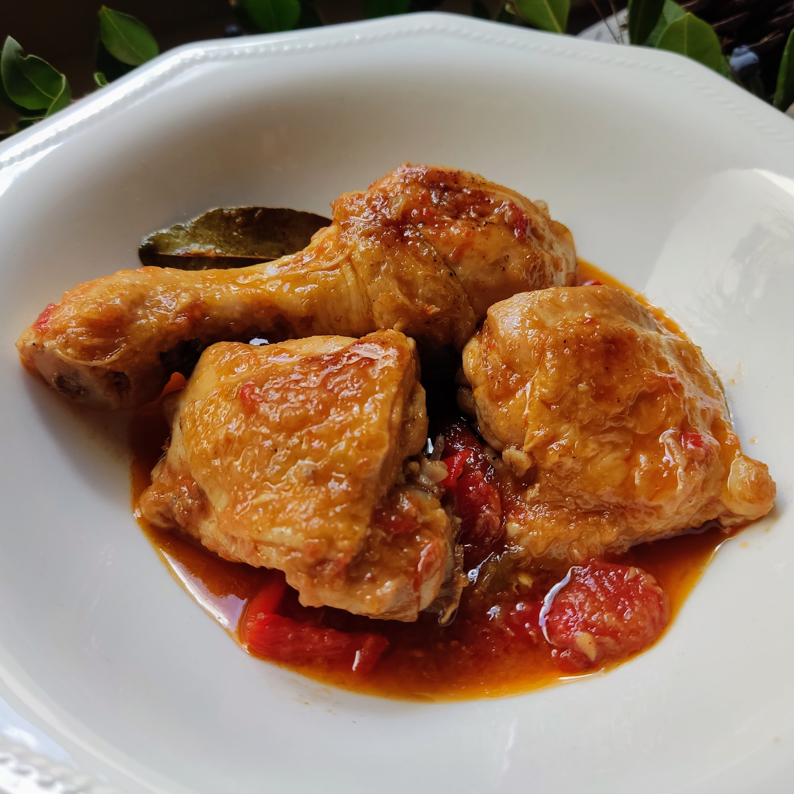

Pollo al Chilindron

Ingredientes
- 1 pollo entero troceado (o 8 piezas de pollo)
- 2 pimientos rojos
- 1 pimiento verde
- 2 cebollas grandes
- 4 dientes de ajo
- 4 tomates maduros
- 100 g de jamón serrano en taquitos
- 200 ml de vino blanco
- 1 cucharadita de pimentón dulce
- 1 hoja de laurel
- Aceite de oliva virgen extra
- Sal y pimienta al gusto
Elaboración
- Salpimenta las piezas de pollo y dóralas en una cazuela grande con aceite de oliva. Cuando estén doradas, retíralas y resérvalas.
- En la misma cazuela, sofríe la cebolla picada, los ajos laminados y los pimientos en tiras hasta que estén tiernos.
- Añade el jamón serrano en taquitos y sofríe un par de minutos más.
- Incorpora los tomates pelados y picados, el pimentón y la hoja de laurel. Cocina durante 5 minutos.
- Vierte el vino blanco y deja que se evapore el alcohol.
- Regresa el pollo a la cazuela, tapa y cocina a fuego medio-bajo durante 30-35 minutos.
- Rectifica de sal si es necesario y sirve caliente acompañado de patatas fritas o arroz blanco.